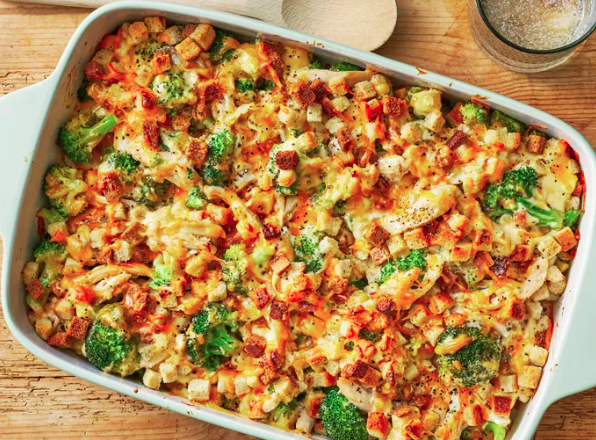

Chicken Broccoli Casserole

Chicken broccoli casserole
Description
An absolute favourite in my family, this is a go-to meal, when I need comfort food that is also healthy, and quick and easy to make.
Ingredients
- 1 Onion
- 250gr mushrooms
- 50gr butter
- 15ml curry powder
- 400ml chicken stock
- 300gr chicken breast (deboned and skinned)
- 1 head of broccoli
- 200gr cheese
- 1-2 tbl spoons of mayonaisse
- Salt and pepper to taste
- Corn flour (to thicken sauce)
Steps
- Chop onions and mushrooms, add curry powder and sautee in butter.
- Cut chicken breasts into pieces and brown with onions and mushrooms.
- Add some salt and pepper.
- Once lightly brown, add chicken stock to the chicken.
- Cut the broccoli into smaller pieces and add to chicken in the pot. (Can be added later if you prefer the broccoli to stay crispy)
- Add mayonnaise once chicken stock is reduced.
- Add corn flour and keep stirring until sauce thickens.
- Pour contents into a casserole dish and cover with grated cheese.
- Bake in oven until cheese has melted.
- Serve with rice.